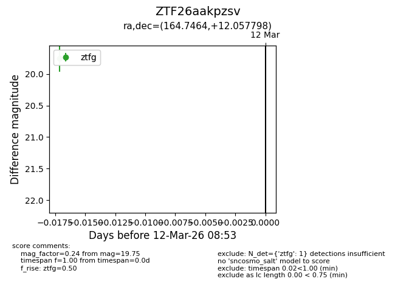
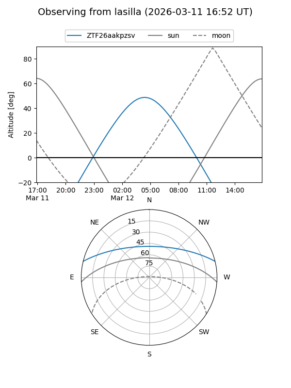
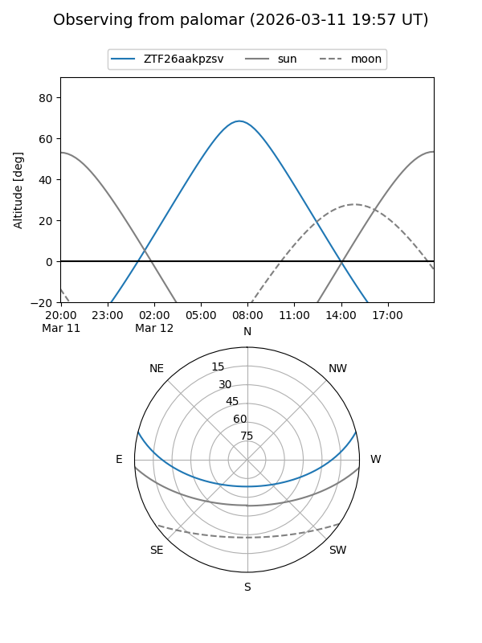

ZTF26aakpzsv
Target ZTF26aakpzsv at 2026-03-12 08:55
Aliases and brokers:
FINK: link
Lasair: link
ALeRCE: link
alt names
ZTF26aakpzsv (ztf,fink_ztf)
Coordinates:
equatorial (ra, dec) = 164.7464,+12.05780
equatorial (HMS+DMS) = 10:58:59.14,+12:03:28.07
galactic (l, b) = (237.1627,+59.64630)
Flags:
Photometry:
last ztfg=19.75
1 ztfg detections
Lightcurve

Visibility


Additional plots